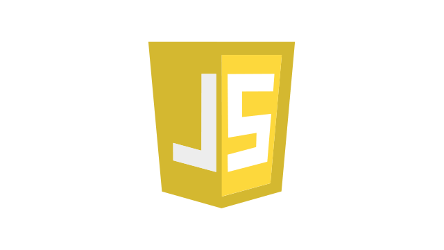

JavaScriptとは
1. はじめに
JavaScriptは、主にWebブラウザ上で実行されるオブジェクト指向のスクリプト言語である。現代のWeb開発において、 HTML、CSSと並ぶ中核的な技術の一つとして位置づけられている。HTMLがWebページの構造を定義し、 CSSが見た目の装飾を指定するのに対し、JavaScriptはページに動的な振る舞いやユーザーとの対話性（インタラクティビティ）を付与する役割を担う。 本サイトでは、JavaScriptの基本的な機能と、Web開発におけるその重要性について概説する。
2. JavaScriptの主な機能
JavaScriptをWebページに適用することにより、静的なドキュメントでは実現不可能な、多岐にわたる動的機能の実装が可能となる。
DOM操作による動的なコンテンツ更新
JavaScriptは、DOM (Document Object Model) と呼ばれる仕組みを介して、HTMLドキュメントの要素をプログラム的に操作できる。これにより、ページ全体を再読み込みすることなく、テキストの書き換え、要素の追加や削除、スタイルの変更などをリアルタイムで行うことが可能である。
ユーザーインタラクションへの応答
ユーザーによるクリック、マウスカーソルの移動、キーボード入力といったアクション（イベント）を検知し、それに応じた処理を実行できる。例えば、ボタンクリックによるメニューの開閉、入力フォームにおけるリアルタイムなバリデーション（入力値検証）などがこれにあたる。
サーバーとの非同期通信 (Ajax)
Ajax (Asynchronous JavaScript + XML) という技術を用いることで、Webページの表示後もサーバーとバックグラウンドでデータ通信を行うことができる。これにより、ページ遷移を伴わずに地図情報を読み込んだり、SNSのタイムラインを更新したりするなど、Webアプリケーションの利便性を飛躍的に向上させる。
3. Web開発におけるJavaScriptの位置づけ
当初、JavaScriptは単純なアニメーションや入力補助といった補助的な役割で用いられることが多かった。しかし、Webアプリケーションの高度化と複雑化に伴い、その重要性は増大している。 現代のフレームワーク（React, Angular, Vue.jsなど）はJavaScriptを基盤としており、大規模で複雑なユーザーインターフェースの構築を効率化している。また、Node.jsの登場により、JavaScriptはWebブラウザ（クライアントサイド）だけでなく、サーバーサイドの開発言語としても広く利用されるようになった。これにより、フロントエンドからバックエンドまでを一貫した言語で開発する道が開かれ、開発効率と生産性の向上に寄与している。
4. 結論
JavaScriptは、静的な情報表示が中心であったWebページに、アプリケーションのような対話性と動的な機能をもたらした基幹技術である。DOM操作、イベント処理、非同期通信といった機能を活用することで、リッチで応答性の高いユーザーエクスペリエンスを実現する。その役割はフロントエンド開発に留まらず、サーバーサイドにも拡大しており、現代のWebエコシステムにおいて不可欠なプログラミング言語であると言える。
体験：シェーダーの編集
WebGLで最初の図形を描く
WebGLの描画は「シェーダー」と呼ばれるプログラムが核心を担います。下のコードエディタで**頂点シェーダー**と**フラグメントシェーダー**を直接編集し、右側のプレビューにどう反映されるか試してみましょう。シェーダーはGPU上で直接実行され、高速なグラフィックス描画を可能にします。
頂点シェーダー (Vertex Shader)
各頂点の最終的な画面上の位置 (gl_Position) を計算します。
フラグメントシェーダー (Fragment Shader)
各ピクセルの色 (gl_FragColor) を決定します。色はRGBA形式（赤, 緑, 青, 透明度）で指定します。
プレビュー
発展:3Dオブジェクトの操作
インタラクティブな3D猫
WebGLの真価は3Dオブジェクトの描画にあります。下のデモでは、複数の立方体を組み合わせて作られた猫が回転しています。コントローラーを操作して、アニメーションや見た目をリアルタイムに変更してみましょう。これにより、行列計算やシェーダーへのデータ転送（Uniform変数）が3Dシーンにどう影響するかを直感的に理解できます。
コントローラーで3D猫の動きや色を自由自在に操ってみましょう。
どのように作られているか？ (コード解説)
この3D猫は、シェーダー、バッファ、そして行列計算というWebGLの3つの重要な要素で構成されています。下のボタンから、このデモを動かしている実際のJavaScriptコードを確認できます。
コードの要点解説
1. シェーダー（Shader）について
GPU上で実行されるプログラム。頂点シェーダーがオブジェクトの形を、フラグメントシェーダーが色や質感を決定します。
2. バッファ（Buffer）について
頂点の座標や色などのデータをGPUに送るためのメモリ領域です。
3. 行列（Matrix）について
オブジェクトの拡大縮小・回転・移動（モデル行列）、カメラの位置（ビュー行列）、遠近感（投影行列）を計算するために使われます。これらを掛け合わせた**MVP行列**をシェーダーに送ることで、3D空間を2D画面に正しく表示します。
4. アニメーションとインタラクション
`requestAnimationFrame`で毎フレーム描画を更新し、アニメーションを実現しています。スライダーやカラーピッカーの値（回転速度、カメラ距離、色）は、シェーダーに送る「Uniform変数」や行列計算に使われ、リアルタイムに描画へ反映されます。
製作時間
完成日
2025年7月23日(水)
総製作時間
400分